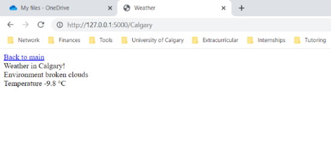

This project involves using the language Python and the Flask library to initiate and deploy the webserver into service and HTML and CSS to manage the layout of the websever. In order to run the webserver, the following code needs to be present:
app = Flask(__name__)
@app.route()
if __name__ == '__main__':
app.debug = True
app.run()
To fetch the weather information at any location, an API was used to request information from the website openweathermap.org by passing in a key. The static and the layout templates involving the CSS and HTML files were imported into the python script and rendered using the library render_template that is part of Flask.